🌰 숲 지키기 · 게임 미리보기
할 일 목록 · 작업 기록 · 계획서 plan.md · 단계마다 웹 빌드를 브라우저에서 캡처해 이 페이지에 쌓는다
7-2단계 · 메인 화면과 카운트다운 (2026-10-13)
앱을 켜면 메인 화면, 게임 시작을 누르면 3 · 2 · 1 · 시작! 뒤에 게임이 시작된다. 일시정지·결과 판에서 처음으로 돌아갈 수 있다.
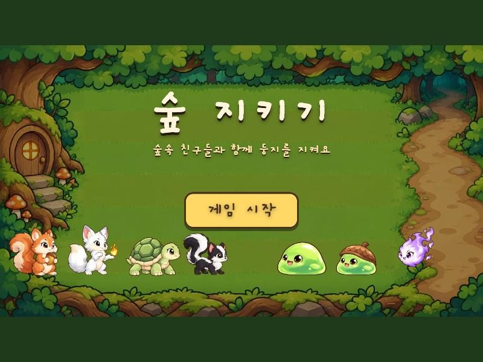
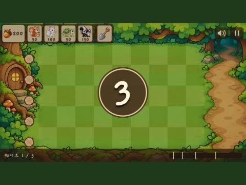
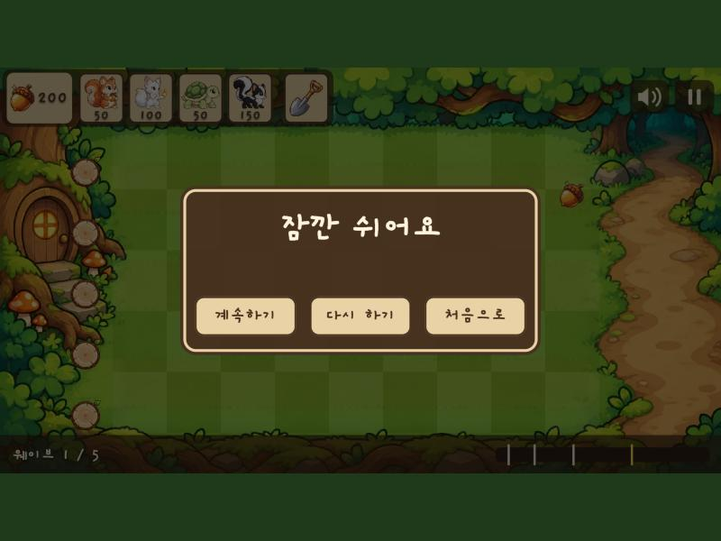
8단계 · 효과음 (2026-10-13)
파이썬으로 직접 합성한 효과음 12가지 (외부 음원 없음, 모두 317 KB). 아래에서 바로 들어 볼 수 있다. 게임에서는 오른쪽 위 스피커 버튼으로 끄고 켠다.
| 소리 | 느낌 | 듣기 |
|---|---|---|
| 도토리 줍기 | 맑은 띠링 두 음 | |
| 동물 놓기 | 부드러운 퐁 | |
| 여우불 발사 | 위로 올라가는 화르륵 | |
| 여우불 명중 | 짧은 툭 | |
| 몬스터 쓰러짐 | 출렁이며 내려가는 뾰옹 | |
| 갉아먹기 | 냠 두 번 | |
| 스컨크 폭발 | 낮은 펑 + 푸슈우 | |
| 통나무 굴러감 | 드르르르 | |
| 큰 무리 경고 | 뿔피리 두 음 두 번 | |
| 클리어 | 올라가는 종소리 | |
| 게임오버 | 내려가는 세 음 | |
| 투구 깨짐 | 쇳소리 땡 |
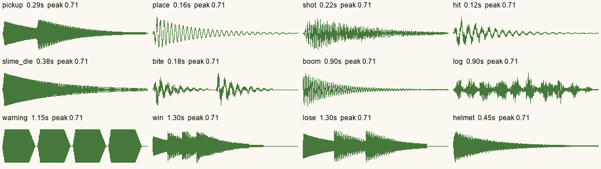
7단계 · 통나무와 승패 (2026-10-13)
레인마다 통나무가 한 번 굴러가 몬스터를 쓸어낸다. 통나무를 쓴 레인이 뚫리면 게임오버, 끝까지 막으면 클리어. 일시정지와 다시 하기.
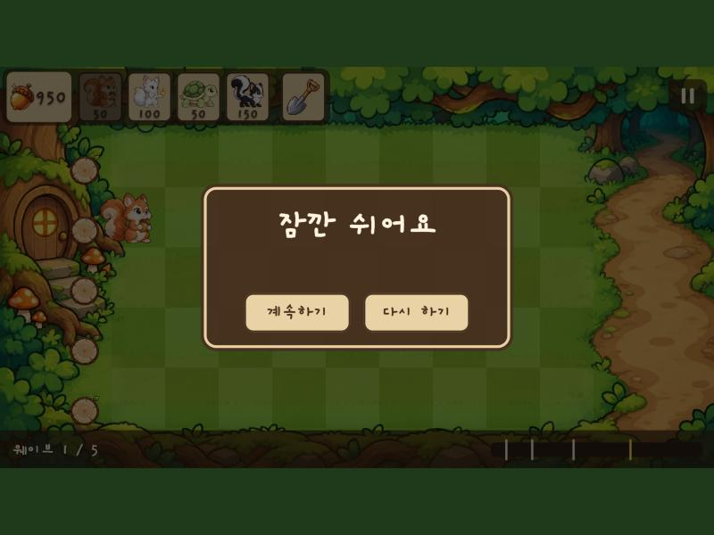
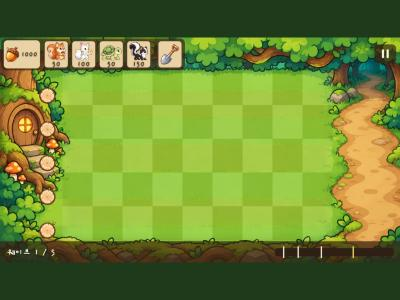
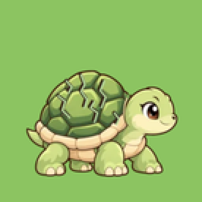
6단계 · 몬스터와 웨이브 (2026-10-13)
몬스터가 흙길에서 걸어 나와 동물 앞에서 멈추고 갉아먹는다. 웨이브 5개(41마리)가 차례로 오고 마지막은 큰 무리다.
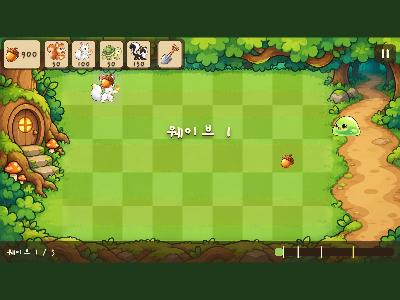
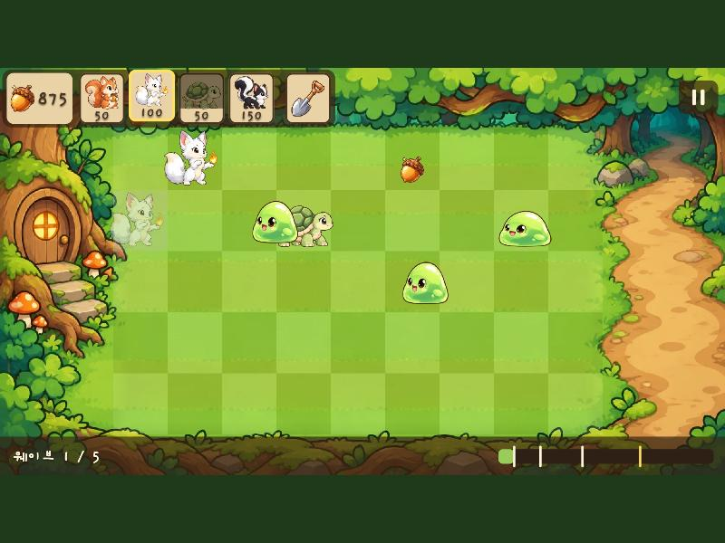
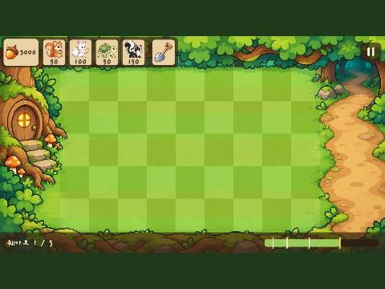
?wave=5 — 진행 바가 27/41만큼 찬 채 시작, 노란 표시는 큰 무리5단계 · 유닛 능력 (2026-10-13)
제자리에 선 연습 상대 몬스터(?practice=1)로 확인했다. 이동·갉아먹기·웨이브는 6단계.
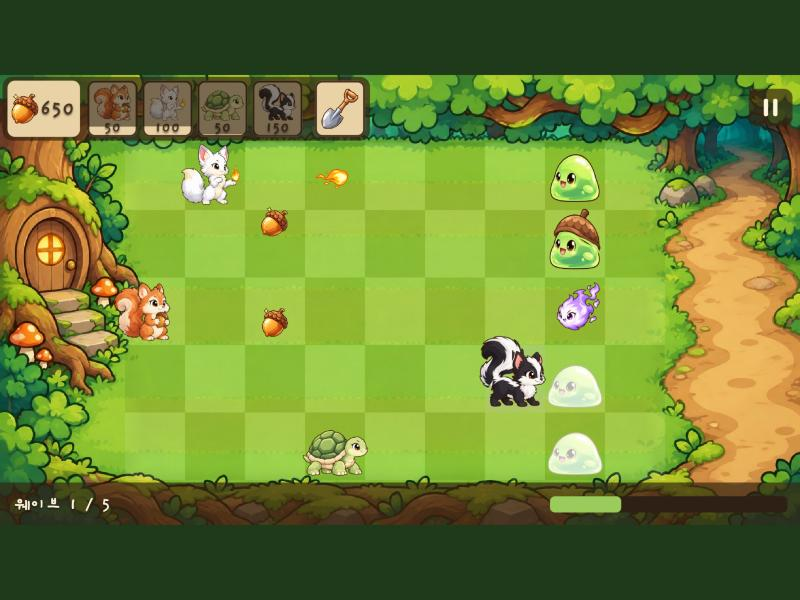
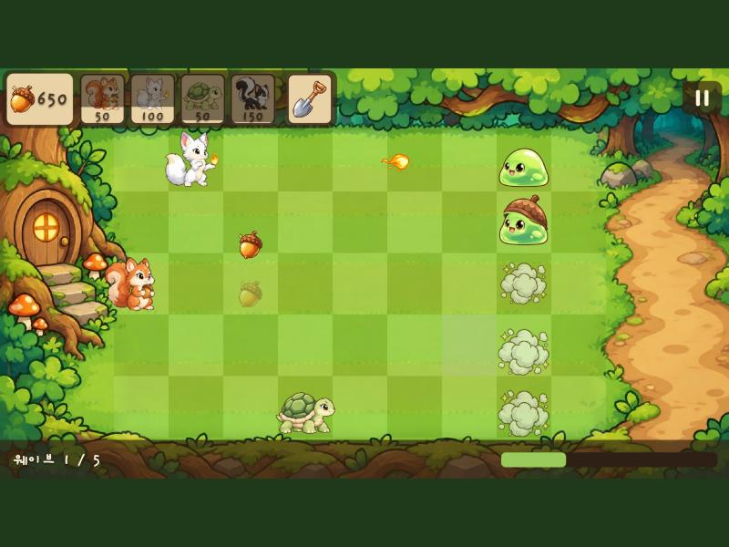
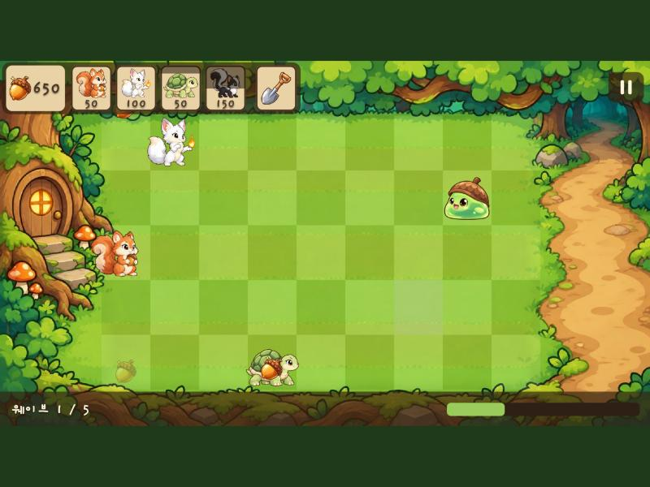
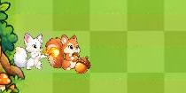
4단계 · 자원과 유닛 배치 (2026-10-13)
웹 빌드에서 직접 플레이했다. 카드를 고르고 칸을 누르면 유닛이 서고, 하늘에서 떨어지는 도토리를 누르면 HUD로 날아가 25개가 더해진다. 삽으로 치울 수 있다.
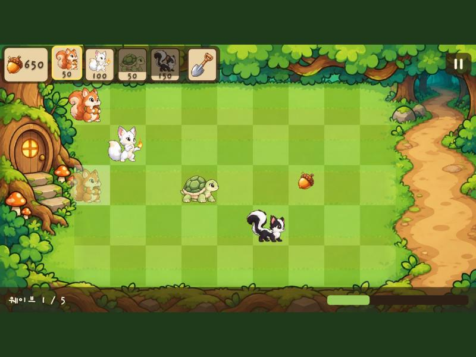
?acorns=1000) — 8초 뒤라 다람쥐·여우 카드는 다시 눌리고, 거북이·스컨크는 쿨다운 중. 다람쥐 카드를 고른 채 빈 칸에 올린 마우스 자리에 반투명 미리보기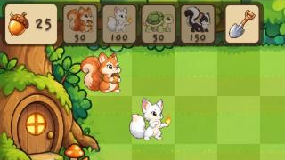
3단계 · 캐릭터 7종 · 효과 · 배경 (2026-10-13)
모든 캐릭터를 같은 컷아웃 방식으로 만들고, Codex 배경 그림의 잔디밭에 칸을 맞췄다. 아래는 실제 시트의 한 프레임씩을 칸에 세워 본 확인 그림이다 (게임 화면이 아니라 합성).
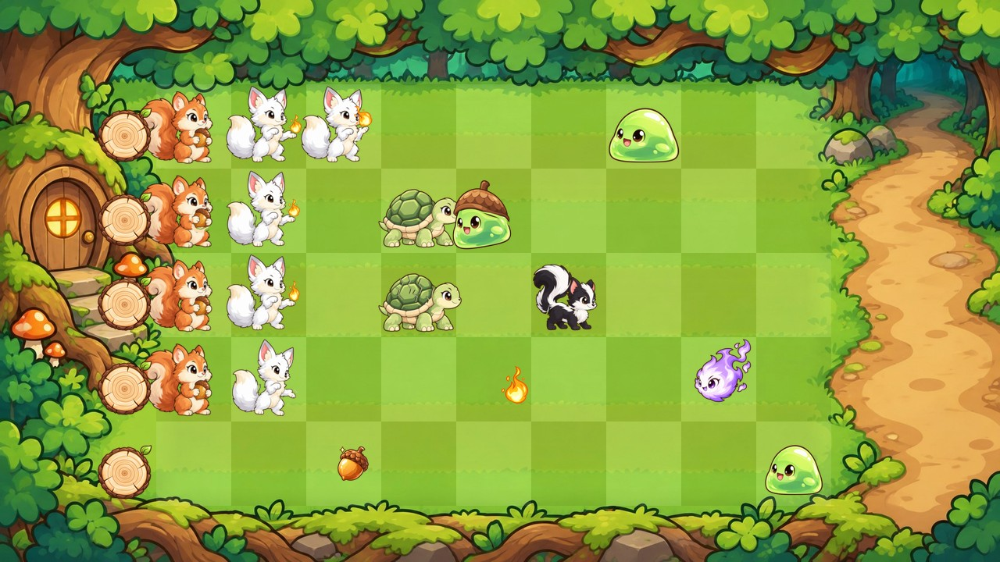
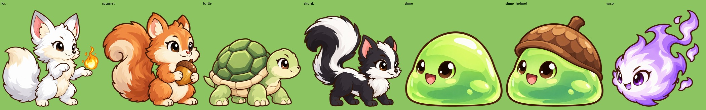
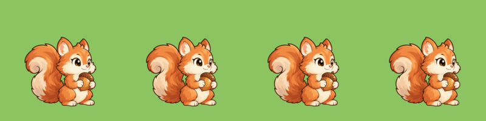
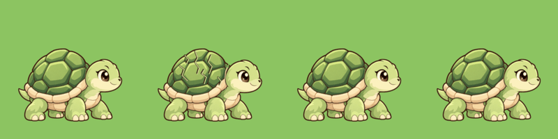
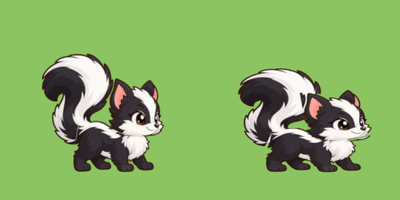
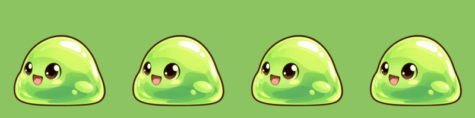
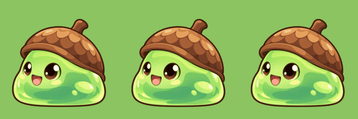
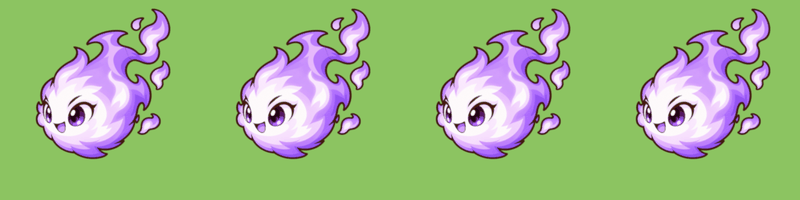
3단계 · 여우 컷아웃 애니메이션 시범 (2026-10-13)
Codex로 그린 기준 그림을 머리·앞발·몸통·꼬리·여우불 조각으로 잘라 Blender에서 움직였다. 12fps 스프라이트 시트로 렌더한 것을 그대로 GIF로 만들었다. 실제 시트 재생은 art_preview.html.
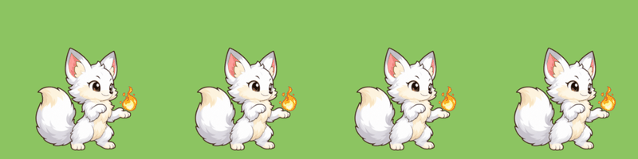
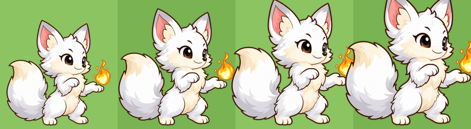
2-1단계 · 한글 폰트 Gaegu Bold (2026-10-13)
오프라인 PWA에서도 한글이 깨지지 않게 폰트를 게임 안에 넣었다. 원본 2.9 MB에서 게임에 쓰는 글자만 남겨 78 KB로 줄였다. 후보 비교는 font_preview.html.
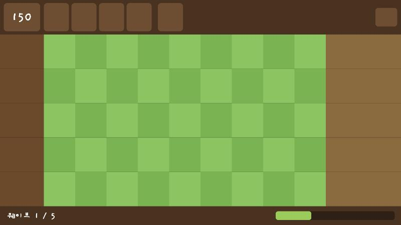
150과 왼쪽 아래 웨이브 1 / 5.
4단계와 6단계에서 실제 값으로 바뀐다.2단계 · 화면과 그리드 (2026-10-13)
아직 그림 없이 색 면으로만 칸 구조를 잡았다. 3단계에서 Codex로 만든 배경과 스프라이트로 바꾼다. 화면은 논리 해상도 1280 × 720으로 고정하고, 다른 비율에서는 남는 부분을 어두운 숲색으로 채운다.
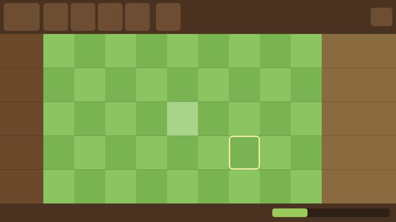
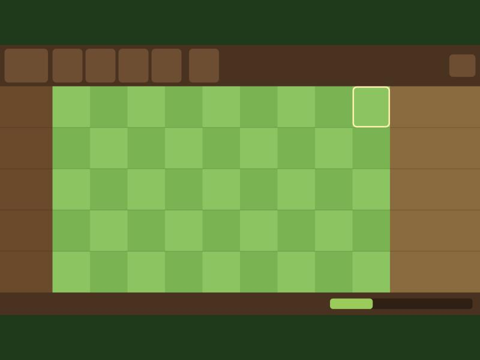
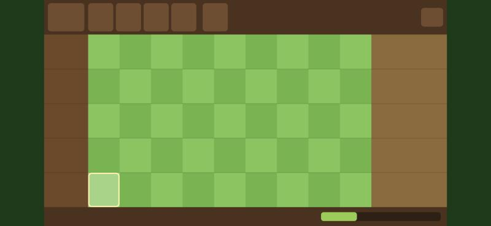
화면 구역
| 구역 | 논리 좌표 | 나중에 들어갈 것 |
|---|---|---|
| HUD (위쪽 갈색 띠) | y 0 ~ 110 | 도토리 수 · 유닛 카드 4장 · 삽 · 오른쪽 끝 일시정지 (4단계) |
| 둥지 · 통나무 열 (왼쪽 흙색) | x 0 ~ 140 | x 60 ~ 140에 레인별 통나무 (7단계) |
| 필드 (잔디 체크무늬) | x 140 ~ 1040, y 110 ~ 660 | 5레인 × 9칸, 칸 하나 100 × 110. 유닛 배치 |
| 등장 구역 (오른쪽 흙길) | x 1040 ~ 1280 | 몬스터가 x 1100에서 나타난다 (6단계) |
| 진행 바 (아래 오른쪽) | y 660 ~ 720 | 웨이브 진행 (6단계). 지금은 30%로 고정 표시 |
검증
flutter test10/10 통과 — 좌표 변환 7개(경계, 필드 밖, 45칸 왕복), 실제 탭 경로 2개(4:3 레터박스에서 탭 → 칸), 카메라 1개- 브라우저에서 세 비율 모두 클릭한 칸이 정확히 선택됐고 콘솔 에러는 없었다